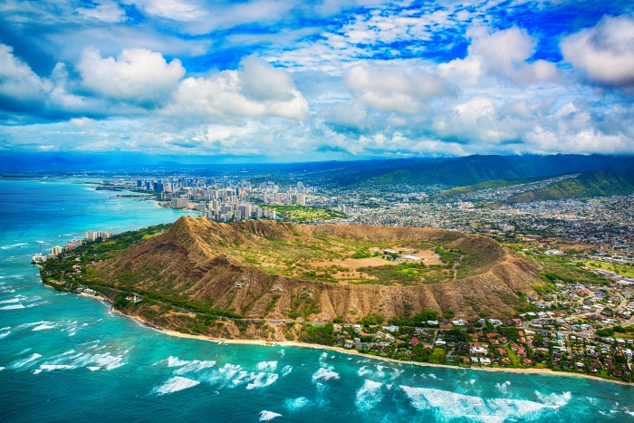

Hawaii
Hawaii is a tropical paradise known for its breathtaking beaches, volcanoes, lush mountains, and vibrant culture. With its warm weather, friendly people, and unique traditions, Hawaii is one of the most popular travel destinations in the world.
The islands have unique traditions like hula dancing and luaus that are essential to the Hawaiian experience
The volcanic islands these chefs and writers call home are lush in culinary tradition. Their recipes and stories capture Hawai'i’s thrilling food culture today.
Oahu has a surprisingly diverse range of flora with differing climate zones based on location and elevation. Throughout my travels I have been lucky to have hiked in some of the most stunning mountains in the world
Surfing was born in Hawaiʻi and is deeply intertwined with its history and culture
Image source here
Discover Hawaii
Video source: Hawaii Travel Video on YouTube